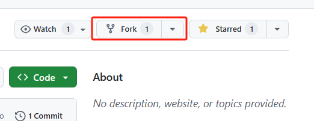
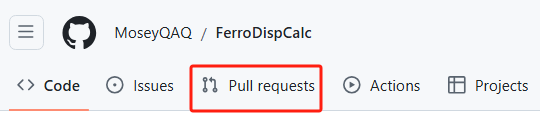
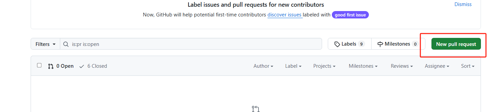
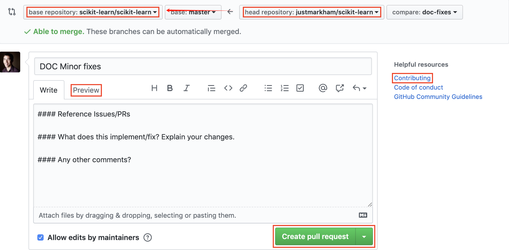

How to Contribute¶
Author: Denan LI
We appreciate contributions to this project! Follow the steps below to get started.
1. Forking the repository¶
The repository (repo) web URL: https://github.com/sliutheorygroup/sliutheorygroup.github.io
Fork the repository by clicking on the "Fork" button on the top right of the project page. This will create a copy of the repository under your GitHub account.

2. Clone the Repo¶
After forking the repository, clone your forked repo to your local machine:
Replace your-username with your GitHub username and repo-name with the name of the repository.
3. Create a New Branch¶
Create a new branch to work on your changes. It’s good practice to name the branch according to the feature or fix you're working on:
4. Make Your Modifications¶
Make the necessary changes to the wiki.
5. Stage, Commit, and Push Changes¶
Once you’ve made your changes, stage the files and create a commit:
Then push the changes to your remote branch:
6. Submit a Pull Request (PR)¶
Pull Request (PR) is a proposal to merge your code to the parent repo.
Once the changes are pushed to your forked repository, submit a PR to the original repository:
- Go to the original repository's githug webpage.
-
Click the "Pull Requests" tab. 
-
Click "New Pull Request." 
-
Select the branch you want to merge from (your forked repository) and the branch you want to merge into (the original repository's main branch).Provide a clear description of the changes you've made and submit the PR. 
-
After review, your modifications will be merged into the origin repo.
7. Delete the Local Branch¶
After your PR has been merged, you can safely delete the local branch:
8. Useful Resources¶
- Github SSH设置：https://zhuanlan.zhihu.com/p/688103044
- Github 提交PR：https://zhuanlan.zhihu.com/p/584834288
- git基本教程：https://www.runoob.com/git/git-tutorial.html
Your contribution is greatly appreciated. If you have any questions, feel free to ask in the repository's issue tracker.